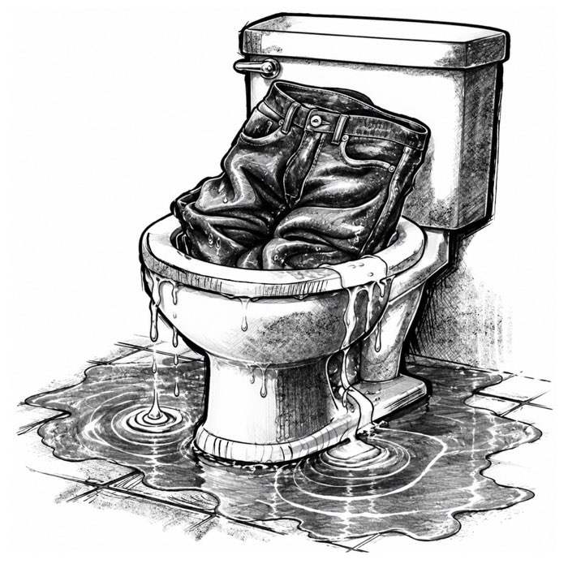

The Blessing Box
A Stinky Afternoon

Friday, December 20
5 Days to Christmas
Hugh sat alone on the hard wooden bench in the boys’ locker room of Constance Middle School. The smells of sweat, dirty socks, and pee were hard to ignore. He was still in his damp gym clothes. Beads of sweat ran down Hugh's face, almost as if his body were crying from running the timed mile.
Hugh jumped at the sound of Tyler’s voice behind him, even though he wasn’t surprised. It always happened after gym class, like clockwork.
“The garage code is zero, seven, zero, six. Then hit the pound sign, and it will open,” Tyler said. Hugh did not have to look to see who Tyler was talking to. No doubt he spoke to his cronies, Jake and Gavin. They followed Tyler everywhere.
Hugh felt Tyler’s breath, moist and sticky on the back of his neck—way worse than a sweater tag. Out of the corner of his eye, Hugh saw the few other boys who had lockers near him grab their belongings and scamper away.
“Hey, Hugh, get a clue,” Tyler taunted.
Hugh tried to ignore Tyler by staring at the enormous paw print painted in gold on the black cement wall. The symbol of the Constance Cougars. A neon-pink paper sign, taped smack in the middle of the gold paw, declared the locker room a “No Bully Zone.” At the bottom, it read, “If you’re being bullied, talk to an adult.”
Yeah, right. Hugh barely talked to anyone. Besides, telling his parents would only make things worse.
“Hey, stick boy, give me those,” Tyler said, snatching Hugh’s jeans from the bench next to him. Tyler walked to a stall and plunged Hugh’s jeans into a nasty toilet someone had used but had not flushed. Tyler’s thugs, Jake and Gavin, laughed cruelly.
From behind lockers across the room, Hugh heard the gym teacher, Coach Ryan, scolding boys for snapping towels. Maybe one of these days Coach Ryan would catch Tyler in the act, but not today.
“Don’t forget, snitches get stitches, stick boy,” Tyler mocked as he walked away.
Hugh closed his eyes tightly. He imagined being Beast Boy, with the superpower to shapeshift into any animal. Hugh would morph into a cougar—the Constance cougar—king of the middle school. Hugh the cougar would growl, flash his sharp teeth, and swipe his clawed paw at Tyler. He wouldn’t hurt Tyler; he’d just teach him a lesson. He’d back Tyler into the stall until he fell into the muddy toilet, where Hugh’s jeans soaked now. Surely a dip in poop water would make Tyler stop picking on Hugh...
Follow Hugh’s adventure
Find out when The Blessing Box is available.
Copyrighted Material
© 2026 TheBlessingBox, LLC